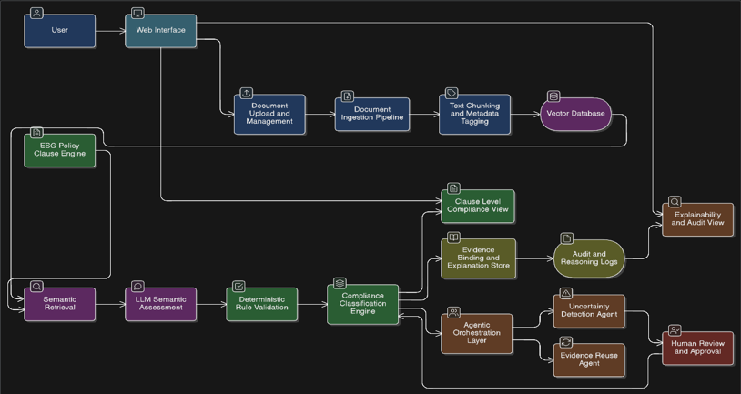

ESGBuddy: Automated Multi-Standard ESG Compliance Evaluation
ESG disclosure is now mandatory under BRSR (SEBI, India), GRI, TCFD, and SASB. Auditing a 400-page report against 140+ clauses manually takes 40–80 hrs and is error-prone. No open tool covers all four frameworks with evidence-cited, clause-level verdicts. ESGBuddy closes this gap using Retrieval-Augmented Generation (RAG) + LLM evaluation.
- BRSR mandatory for India's top 1,000 listed firms; scope expanding annually.
- GRI / TCFD / SASB required simultaneously by institutional investors.
- RAG grounds LLM outputs, cutting hallucination on regulatory documents (Lewis et al., 2020).
- LLMs achieve strong zero-shot classification with structured rubrics + cited evidence.

RAG (Lewis et al., 2020) grounds model outputs in retrieved passages, reducing hallucination. Dense retrieval (Reimers & Gurevych, 2019) outperforms BM25 on regulatory text. ChromaDB/FAISS enable millisecond-level top-k retrieval. LLM-as-evaluator (Zhao et al., 2024) shows strong zero-shot agreement with human labels. Prior tools address one standard — multi-standard evidence-cited audit is an open gap.
- O1 Unified PDF ingestion into embedded vector segments (ChromaDB).
- O2 Clause-level evaluation across BRSR, GRI, TCFD, SASB in one workflow.
- O3 Explainable verdicts with cited textual evidence per clause.
- O4 Deterministic rule-validator post-processing (numeric thresholds, keywords).
- O5 Accuracy benchmarked against manually annotated ground-truth labels.
- O6 Interactive React dashboard with drill-down and export.


Backend: Python 3.11, FastAPI — /ingest, /scan, /accuracy, /reports, rule validator. Frontend: React 18, Vite, TailwindCSS, Recharts. AI: gpt-4o-mini (temp 0.1) + text-embedding-3-small. Store: ChromaDB.
Ingest → Embed → Retrieve top-k → Reason (LLM) → Validate (rules) → Score vs. GT → Render dashboard
Labels manually annotated by authors — each of 13 company reports read end-to-end and labelled clause-by-clause. Top-30 material clauses per framework selected (BRSR priority: Core KPIs → principle-level → supplementary). Produced 52 gold-standard files (13 companies × 4 standards × 30 clauses = 1,560 labelled data points).
RIL, TCS, Infosys, TATA Motors, Sasken, Himadri, NYK, Nestlé, Givaudan, GPM, Unilever, Apple, Amazon


Strong on numeric clauses (GHG, water, energy). Accuracy drops on narrative disclosures and tabular data. Cost <$0.40/report · ~2.1 s/clause.
[1] P. Lewis et al., "RAG for Knowledge-Intensive NLP," NeurIPS, 2020.
[2] SEBI, "BRSR Circular," 2023.
[3] GRI, "Universal Standards," 2021.
[4] TCFD, "Final Recommendations," 2017.
[5] SASB, "SASB Standards," 2022.
[6] N. Reimers & I. Gurevych, "Sentence-BERT," EMNLP, 2019.
[7] OpenAI, "GPT-4o-mini Technical Report," 2024.
[8] ChromaDB, "AI-native embedding database," 2024.
[9] A. Vaswani et al., "Attention Is All You Need," NeurIPS, 2017.
[10] M. Zhao et al., "LLMs as Evaluators: Survey," arXiv:2404.12272, 2024.
[11] J. Johnson et al., "FAISS," IEEE Trans. Big Data, 2021.
[12] R. Bommasani et al., "Foundation Models," Stanford CRFM, 2022.
The authors thank their project guide and the Department of Computer Engineering, [Institution], for their support. All sustainability reports used are publicly available regulatory disclosures.
- PDF extraction fidelity on multi-column/tabular layouts.
- Hosted LLM dependency — future: fine-tuned ESG domain model.
- Active-learning loop to grow human-labelled gold set.
- Multi-lingual support (Hindi, regional BRSR filings).
- Broader corpus across all 1,000 BRSR-mandated firms.
Mentor: [Guide Name] · Capstone 2025-26
[email]
Dept. of Computer Engineering
[City], India